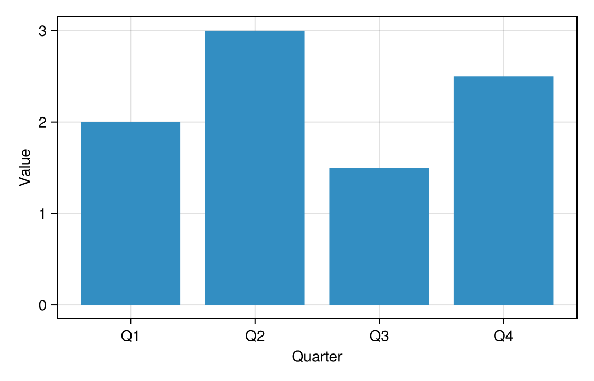
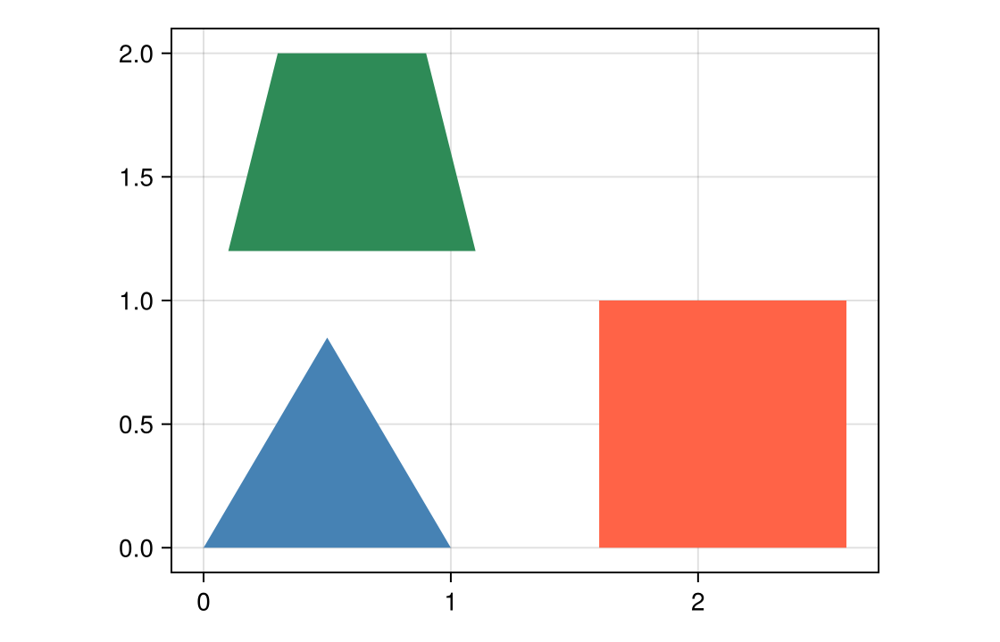
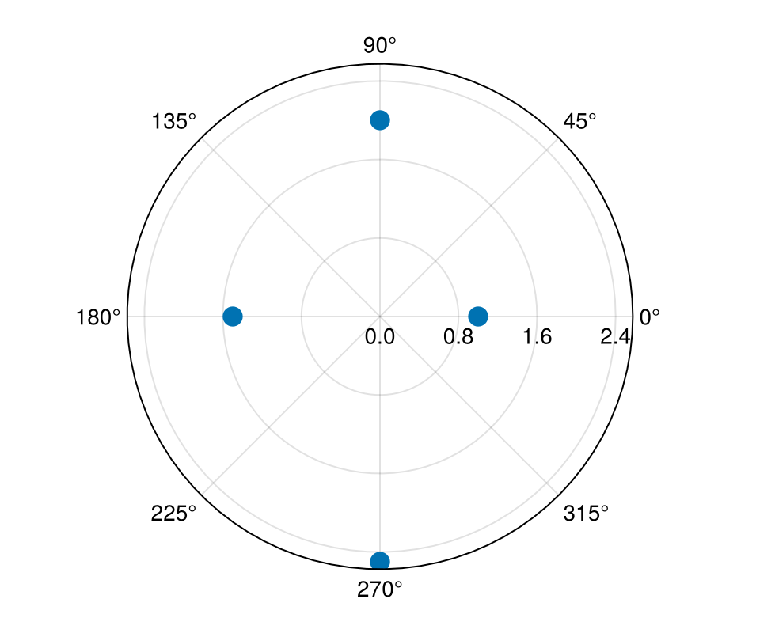

Click marks
Every plot masque(fig) recognizes is clickable, not only scatters. A click on a mark — a point, bar, polygon, line, or text label — hands it to your notebook as an ElementEvent: its 1-based pick.index, plus fields that depend on what kind of mark it is. Heatmap cells, legend entries, and colorbars return their own event types (see Concepts). This page walks through bars, polygons, lines, and points on a polar axis. Plot-object defaults lists the fields each plot type reports, and Supported plots and axes which plots work on which axes.
Bars
A bar reports its value (the bar's height) and its low and high ends, so a stacked or dodged bar still tells you which segment you hit. Here each click reads the quarter and the value:
Notebook as text
Click a bar. The last cell reads its value.
Draw the bar plot the way you already draw it, and end the cell with nothing so this cell does not print the figure. masque makes each bar clickable.
begin
fig = Figure(size = (560, 360))
ax = Axis(
fig[1, 1];
xlabel = "Quarter",
ylabel = "Value",
xticks = (1:4, ["Q1", "Q2", "Q3", "Q4"]),
)
barplot!(ax, 1:4, [2.0, 3.0, 1.5, 2.5])
nothing
endmasque mounts the overlay on the figure. @bind pick stores a click in pick. Hover highlights the bar and does not change pick.
@bind pick masque(fig)
Before a click, pick is nothing. A click reads the bar: pick.value is the height, and pick.index is 1-based. This cell reads pick, so it re-runs on the click.
if pick === nothing
"click a bar"
else
"Q$(pick.index) — value $(pick.value)"
endclick a barHistograms, waterfalls, and crossbars are clickable too, each with its own fields: a waterfall step reports low, high, and value; a histogram bin reports value (the bar's height, which is a count only with normalization = :none), low, and high; a crossbar reports midpoint, low, and high. A heatmap is a grid of cells rather than a list of bars; it has its own page, Inspect a grid.
Polygons
Each polygon of a poly! is one mark, reported by its index in the order you drew them. Pair the index with your own list of names, or pass payloads to PolygonInteractable so the name travels with the click:
Notebook as text
Click a polygon. The last cell names it.
Draw the polygons the way you already draw them. masque makes each ring clickable.
begin
fig = Figure(size = (560, 360))
ax = Axis(fig[1, 1]; aspect = DataAspect())
poly!(
ax,
[
Point2f[(0.0, 0.0), (1.0, 0.0), (0.5, 0.85)],
Point2f[(1.6, 0.0), (2.6, 0.0), (2.6, 1.0), (1.6, 1.0)],
Point2f[(0.1, 1.2), (1.1, 1.2), (0.9, 2.0), (0.3, 2.0)],
];
color = [:steelblue, :tomato, :seagreen],
)
nothing
end@bind pick stores a click in pick. Hover outlines the polygon and does not change pick.
@bind pick masque(fig)
Before a click, pick is nothing. pick.index is 1-based. This cell reads pick, so it re-runs on the click.
if pick === nothing
"click a polygon"
else
names = ["triangle", "square", "trapezoid"]
"$(names[pick.index]) selected"
endclick a polygonBands, densities, filled contours, violins, and Voronoi cells are polygons too. A filled contour reports the low and high of its level. A click inside a hole of a contour level hits whatever polygon is drawn in the hole, not the ring around it, and hits nothing if the hole is empty (a peak above the top level, for example).
Lines
A lines! call is a single mark: clicking anywhere along the path selects the whole line, however many vertices it has, which matches how a line plot is read: as one series. To read the value at a particular x along a line instead, use a SliceInteractable.
begin
fig = Figure()
ax = Axis(fig[1, 1])
xs = 0:0.1:10
lines!(ax, xs, sin.(xs))
lines!(ax, xs, cos.(xs))
nothing
end@bind pick masque(fig)pick.layer tells the two lines apart (:lines and :lines_2, in the order you drew them). stairs! is also one mark per call, with ids :stairs, :stairs_2, and so on, and a series! call is one layer whose pick.index is the series. Plots made of separate pieces — linesegments!, error bars, range bars, hlines!, and vlines! — make each piece its own mark instead.
Points on a polar axis
Scatters, lines, and segments work on a PolarAxis. A point's x is its angle and its y its radius, the same order you passed them in:
Notebook as text
Click a point on the polar axis. The last cell reads its direction and radius.
Scatter the points the way you already scatter them on a PolarAxis. masque makes each point clickable.
begin
fig = Figure(size = (480, 400))
ax = PolarAxis(fig[1, 1])
pts = Point2f[(0.0, 1.0), (π / 2, 2.0), (π, 1.5), (3π / 2, 2.5)]
scatter!(ax, pts; markersize = 18)
nothing
end@bind pick stores a click in pick. pick.x is the angle and pick.y is the radius.
@bind pick masque(fig)
Before a click, pick is nothing. This cell reads pick, so it re-runs on the click.
if pick === nothing
"click a point"
else
dirs = ["east", "north", "west", "south"]
"$(dirs[pick.index]) — r = $(pick.y)"
endclick a pointBars, heatmaps, and polygons on a polar axis are skipped with a warning, and the readouts that need a flat axis are not available there; see Supported plots and axes.